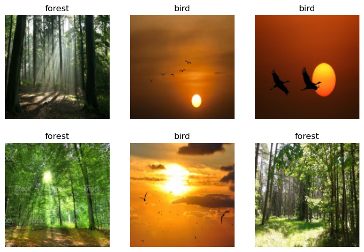

from duckduckgo_search import ddg_images
from fastcore.all import *
def search_images(term, max_images=30):
print(f"Searching for '{term}'")
return L(ddg_images(term, max_results=max_images)).itemgot('image')#NB: `search_images` depends on duckduckgo.com, which doesn't always return correct responses.
# If you get a JSON error, just try running it again (it may take a couple of tries).
urls = search_images('bird photos', max_images=1)
urls[0]Searching for 'bird photos''https://amazinganimalphotos.com/wp-content/uploads/2016/11/beautiful-birds.jpeg'from fastdownload import download_url
dest = 'bird.jpg'
download_url(urls[0], dest, show_progress=False)
from fastai.vision.all import *
im = Image.open(dest)
im.to_thumb(256,256)download_url(search_images('forest photos', max_images=1)[0], 'forest.jpg', show_progress=False)
Image.open('forest.jpg').to_thumb(256,256)searches = 'forest','bird'
path = Path('bird_or_not')
from time import sleep
for o in searches:
dest = (path/o)
dest.mkdir(exist_ok=True, parents=True)
download_images(dest, urls=search_images(f'{o} photo'))
sleep(10) # Pause between searches to avoid over-loading server
download_images(dest, urls=search_images(f'{o} sun photo'))
sleep(10)
download_images(dest, urls=search_images(f'{o} shade photo'))
sleep(10)
resize_images(path/o, max_size=400, dest=path/o)failed = verify_images(get_image_files(path))
failed.map(Path.unlink)
len(failed)0dls = DataBlock(
blocks=(ImageBlock, CategoryBlock),
get_items=get_image_files,
splitter=RandomSplitter(valid_pct=0.2, seed=42),
get_y=parent_label,
item_tfms=[Resize(192, method='squish')]
).dataloaders(path, bs=32)
dls.show_batch(max_n=6)
learn = vision_learner(dls, resnet18, metrics=error_rate)
learn.fine_tune(3)/home/matt/.local/lib/python3.10/site-packages/torchvision/models/_utils.py:208: UserWarning: The parameter 'pretrained' is deprecated since 0.13 and will be removed in 0.15, please use 'weights' instead.
warnings.warn(
/home/matt/.local/lib/python3.10/site-packages/torchvision/models/_utils.py:223: UserWarning: Arguments other than a weight enum or `None` for 'weights' are deprecated since 0.13 and will be removed in 0.15. The current behavior is equivalent to passing `weights=ResNet18_Weights.IMAGENET1K_V1`. You can also use `weights=ResNet18_Weights.DEFAULT` to get the most up-to-date weights.
warnings.warn(msg)
Downloading: "https://download.pytorch.org/models/resnet18-f37072fd.pth" to /home/matt/.cache/torch/hub/checkpoints/resnet18-f37072fd.pth| epoch | train_loss | valid_loss | error_rate | time |
|---|---|---|---|---|
| 0 | 0.864567 | 1.536042 | 0.235294 | 00:02 |
| epoch | train_loss | valid_loss | error_rate | time |
|---|---|---|---|---|
| 0 | 0.312403 | 0.425286 | 0.147059 | 00:01 |
| 1 | 0.171983 | 0.211438 | 0.029412 | 00:01 |
| 2 | 0.114812 | 0.117522 | 0.029412 | 00:01 |
is_bird,_,probs = learn.predict(PILImage.create('bird.jpg'))
print(f"This is a: {is_bird}.")
print(f"Probability it's a birad: {probs[0]:.4f}")This is a: bird.
Probability it's a bird: 1.0000